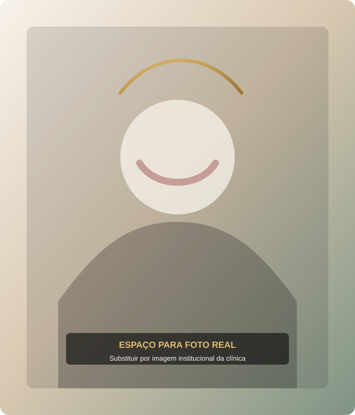

Consultas ginecológicas
Acompanhamento individualizado para diferentes fases da vida, com escuta cuidadosa, orientação ética e foco em saúde integral.
Clínica ginecológica em Boa Esperança - MG
Atendimento ginecológico humanizado com foco em prevenção, diagnóstico e bem-estar da mulher.

Sobre a Dra. Lélia
Experiência, atualização constante e escuta atenta para acompanhar cada paciente com respeito e segurança.
A Dra. Lélia Moreira Toledo é médica formada pela Universidade Federal de Juiz de Fora (UFJF), especialista em Ginecologia e Obstetrícia e em Ultrassonografia.
Possui Título de Especialista em Ginecologia e Obstetrícia (TEGO nº 0504/2005), além dos Registros de Qualificação de Especialista em Ginecologia e Obstetrícia (RQE nº 15.959) e Ultrassonografia (RQE nº 15.960).
Participa regularmente de congressos e cursos de atualização, mantendo-se alinhada aos avanços da medicina para oferecer um atendimento seguro, ético e baseado nas melhores práticas.
Especialidades
Cuidados essenciais para prevenção, acompanhamento e promoção da saúde feminina.
Acompanhamento individualizado para diferentes fases da vida, com escuta cuidadosa, orientação ética e foco em saúde integral.
Atenção à prevenção e ao diagnóstico precoce, respeitando a história, as necessidades e o momento de cada paciente.
Exames de imagem realizados com responsabilidade técnica, acolhimento e orientação clara durante o atendimento.
A clínica
O consultório da Dra. Lélia Moreira Toledo foi pensado para oferecer um atendimento ginecológico acolhedor, organizado e individualizado, valorizando o diálogo e a confiança entre médica e paciente.
O cuidado é conduzido com atenção à prevenção, ao diagnóstico precoce e à promoção da saúde feminina, em um ambiente preparado para receber mulheres com respeito e discrição.
Dúvidas frequentes
O agendamento pode ser feito pelo WhatsApp da clínica, pelo telefone ou pelo formulário de contato disponível nesta página.
Sim. O atendimento com a Dra. Lélia Moreira Toledo pode ser realizado de forma particular e também pela Unimed.
Os serviços principais são consultas ginecológicas, exames preventivos e ultrassonografias.
A clínica fica na Rua Francisco Oliveira Naves, 31, bairro Nova Era/Centro, em Boa Esperança - MG.
Recomenda-se entrar em contato previamente para confirmar disponibilidade, horários e orientações para o atendimento.
Ao tocar no botão de WhatsApp, uma mensagem pronta será aberta para facilitar o início da conversa com a equipe da clínica.
Contato
Entre em contato para informações sobre horários, atendimento particular, Unimed e orientações para sua consulta.
WhatsApp (35) 98841-2574 E-mail promulherbe@gmail.com Instagram @lelia.m.toledo
Segunda a quinta-feira
8h às 16h
Sexta-feira
8h às 11h